Click Here for Stats |
Cork Bowl would like to thank WTWO's Jesse Walker for helping out with this year's pregame show yet again. Click Here to visit Cork Bowl's official weatherman. |
Saturday, November 22nd - With the new "no rushing" rule in effect, all signs pointed to a shootout on Saturday in Cork Bowl 13. However, both defenses stepped up to the challenge, and the Grisons were able to hold on for dear life to an early lead to take Cork Bowl 13 by a score of 105-91. An absolutely
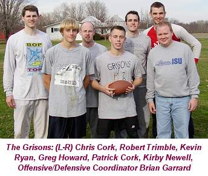
beautiful 65 degree day was the backdrop for Cork Bowl 13 - known as the year of the comebacks. Grisons quarterback Kirby Newell returned to the field after a brief 3-year retirement and Zo'ril receiver Brooks Wilson made his first appearance since Cork Bowl 5 - over 8 years ago. Yet another comeback was made by veteran Tony Cork, who filled in for Reggie Truitt midway through the second quarter after Truitt suffered a concussion. By the time the day ended, a record 13 players saw time on the field, and the much-maligned Greg Howard, who had caught a total of 6 passes the past two years, took home his first MVP award with a 15 catch, 5 touchdown performance.The Grisons won the coin toss, and deferred possession to the second half giving the Zo'ril the ball to start the game. Willy Truitt started hot completing 4 of his first 6 passes as the Zo'ril
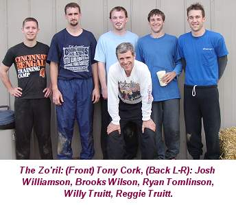
jumped out to an early 7-0 lead on a touchdown reception by Brooks Wilson - his first score since Cork Bowl 5. The Grisons looked to answer quickly, however, Newell's 3-year hiatus seemed quite apparent as he misfired on his first three passes forcing the Grisons into a 4th and 20 from their own three-yard line. The conservative approach would have been to punt the ball away and force the Zo'ril to go the length of the field, however, Newell and offensive coordinator Brian Garrard made the risky decision to go for the first down. Newell made what may have been his most important throw of the game on the play as he fired a perfect pass to Patrick Cork over the middle for a gain of 25 yards and a huge first down. "I thought that play would really pump us up," commented Newell. "However, we weren't able to turn it into points." Despite the huge conversion, the Grisons were unable to score on the possession as Newell missed both Corks in the endzone handing the ball back over to the Zo'ril deep in their own territory, trailing 7-0. Newell started the game just 2-for-8 on the opening drive.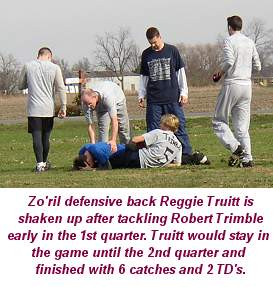
On the second play following the goal line stand, the Zo'ril went for the endzone, but Willy Truitt's pass deflected off the hands of Josh Williamson and rookie Robert Trimble made a shoestring interception, and the momentum had switched back to the Grisons. The play turned out to be more than just a change in momentum, as reigning MVP Reggie Truitt suffered a concussion while making the tackle on Trimble. Truitt would stay in the game until midway through the 2nd quarter, but was never the same, and the Zo'ril would eventually dig themselves a hole too deep to climb out of. "When Reggie got hurt on our second drive of the game, he was not the same Reggie that I have played with the last two years," commented Willy Truitt. "It was obvious in the huddles, and with his stamina. I think that eventually took a toll on me and the rest of the team. My #1 reciever was gone (much like P. Cork of last year) and that made it much harder to get those very important 3rd and longs, or 4th and shorts." On the ensuing possession, Newell hit an open Greg Howard who took it the length of the field for the tying score and the first points for the Grisons. The Zo'ril answered with a touchdown pass to Reggie in the back of the endzone to make it 14-7, however Newell went 3-for-3 on the next drive and Chris Cork fought off three defenders and stretched the ball over the goal line to tie the game back at 14-14 with 5 minutes to go in the quarter. Th
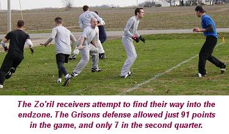
e Zo'ril moved the ball to midfield, however on a 4th and 6 play, Chris Cork batted down a pass intended for Reggie and the Grisons quickly turned the stop into points as Newell found Patrick Cork in front of the garage for a score and the Grisons had their first lead at 21-14 at the end of the first quarter.In the quarter, both quarterbacks struggled to hit their receivers as Newell was 8-for-16 with 3 touchdowns and Truitt went 10-for-20 with 2 scores and an interception. Patrick Cork led the Grisons with 4 catches and Reggie Truitt had 4 for the Zo'ril. "I think the wind was really a factor early," commented Chris Cork. "Plus, Kirb was a little juiced up being back in the game and had a lot of high throws. Both teams seemed to figure out that the short crossing routes were the best bet to move the ball, and the rest of the game showed that."
Trailing for the first time in the game, the Zo'ril took over to start the second quarter and Truitt went 4-for-5 on the drive and found brother Reggie for his
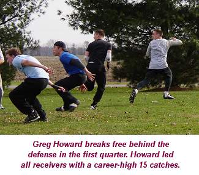
second score to tie the game at 21. Again, the Grisons answered with a four-play drive that ended with Kevin Ryan's first touchdown catch of the game to put the Grisons back ahead 28-21, as all four Grisons receivers had one touchdown reception each. The Zo'ril marched into Grisons territory, but the offense bogged down as Grisons defensive back Robert Trimble knocked down a pair of passes on the drive and the Grisons were able to keep the Zo'ril out of the endzone - in what would become a pattern in the second quarter. Newell continued to stay hot as he completed three straight passes on the following possession and found Chris Cork for another touchdown and the first two-score advantage in the game at 35-21. In desperate need of a score, the Zo'ril again moved the ball near midfield, but Willy's short pass to Reggie was dropped on fourth-and-5, and the Grisons took over yet again with a chance to blow the game wide open. That play would be Reggie's last as he would leave the field with 11:00 left in the first half. In his place on defense would be Jake Hoalt, seeing his first on-field action following a year and a half of filming. Tony Cork would make his much-anticipated return as the quarterback for the Zo'ril on offense. Also, making his debut behind the camera and as color commentator was Todd Koenig, friend of Ryan Tomlinson. "Todd was a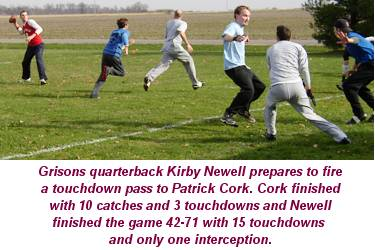
welcome addition to the booth," remarked play-by-play man Eric Dean. "It was a great performance to step in unprepared and not miss a beat," added Patrick Cork. "Especially since it was his first ever Cork Bowl. It was definitely Tomlinson's best contribution to a Cork Bowl in quite some time."The Grisons stayed hot as Newell found Chris Cork again for a score on 4th down from the one-yard line and suddenly the lead was 42-21. Tony Cork took the field at QB for the Zo'ril, his first action since his forgettable Cork Bowl 12 game. The layoff and lack of time to warm up seemed to affect Cork as he was unable to move his team past midfield, and for the third consecutive possession, the Grisons defense forced a turnover on downs and took over with a short field once again. "Their drives kept stalling near midfield," responded coach Brian Garrard. "We were playing a bend-but-don't-break defense as we dropped
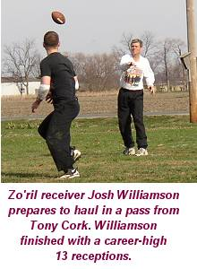
into a zone most of the rest of the game. They had some crucial drops, but the most important part of our successful defense in the second quarter was Robert Trimble. He was amazing." Trimble was unofficially credited with 6 passes defensed in the game, many of them coming in the first half.Following the defensive stop, the Grisons turned the ball right back over to the Zo'ril as Newell was intercepted for the only time on the day as his pass deflected off the hands of Kevin Ryan into Ryan Tomlinson's breadbasket. The interception was the first of Tomlinson's career. With a chance to cut the lead back to two scores, the Zo'ril continued to struggle behind Tony Cork, in part due to a great play by Chris Cork. On 3rd and 15, Tony completed a pass to Willy Truitt for nearly 10 yards, but Chris spun Truitt backwards, then knocked the ball loose, and by the time the Zo'ril were able to recover the ball, the play had netted a net gain of zero and they were forced to punt - giving the
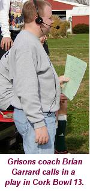
Grisons the ball with just over a minute to go in the first half. On the second play of the ensuing drive, Newell completed a short pass to Greg Howard, who made a nice cut-back to the sideline and outran everyone on the field for another long touchdown and the lead had grown to 49-21. With 44 seconds left to move the length of the field, the crowd noise reached a deafening pitch as a combine drove by. The added noise seemed to motivate the Zo'ril as they put together a successful drive for the first time since Cork took over at quarterback on three straight completions that moved the ball to the one-yard line. However, Cork made his first mistake of the game as he found a wide open Kevin Ryan in the endzone - unfortunately Ryan was wearing a Grisons uniform and intercepted the pass with 12 seconds to go in the half. "I was looking away the whole time and turned to where I thought Tomlinson would be, and Kevin was right there," said Tony Cork. "I pride myself on not throwing interceptions, and that one really hurt because we had to have a score there."The missed opportunity left the score at 49-21 at halftime in favor of the Grisons. The Zo'ril scored on the second play of the quarter, but never found the endzone again - going the final 24 minutes without a point. The 7 points allowed in the quarter by the Grisons tied a Cork Bowl record for fewest points in a period. "When Tony Cork came in and took over the QB'ing, it definitely took us some time to adapt and we had to change our strategy a little bit," replied Willy Truitt. "It was my first time running routes in many years, and it took me a while to get warmed up." All of the player movement on the Zo'ril side of the ball seemed to put the team in a funk for most of the second quarter, and despite a much crisper second half, the damage had already been done.
After starting just 1-for-5, Tony ended the first half 5-for-11. Willy Truitt struggled somewhat while at quarterback completing just 15 of 30 passes with 3 touchdowns and an interception. Newell was just 17-for-32, however 7 of those completions went for scores. Brooks Wilson and Reggie Truitt led all receivers with 6 first half catches. Chris Cork had 5 catces and 3 touchdowns for the Grisons and Greg Howard had 5 catches and 2 scores.
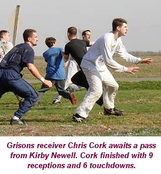
The Grisons started the second half with a four touchdown lead and the ball, and were hoping to put the game out of reach early. However, on the second play of the half, Greg Howard fumbled after a 10 yard reception and the ball was recovered by Brooks Wilson - the first big break for the Zo'ril. On tthe second play of the drive, Tony found Willy for a score - Truitt's first touchdown reception since Cork Bowl 6 - to cut the lead to 49-28. "I knew we were in for a fight at that point," remarked Patrick Cork. "We had a chance to make it a five-score advantage, and instead they were only down three scores."
The Grisons went to a no-huddle offense on the next drive and worked it to perfection as it took just three plays and 48 seconds to score as Newell found Howard for the 56-28 lead. The Zo'ril responded with a 90 second drive of their own as Tony Cork completed three straight passes capped off by a Brooks Wilson touchdown to cut the lead back to 21 points at 56-35. Again the Grisons went to a no-huddle approach as Newell found Howard on back-to-back plays for another score to push the lead to 63-35. In the fast and furious action to start the third quarter, the teams combined for four touchdowns in under 7 minutes of play. "We wanted to speed up the game and see if we could wear them down," replied Newell. "They had lost their top receiver and had guys playing different positions, and we wanted to attack them quickly and try to push our lead as far as we could." The Zo'ril scored quickly again on their next drive as Willy Truitt made a nice run after the catch on a crossing route and the
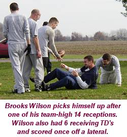
lead was down to 63-42. Going back to a conventional offense, the Grisons moved right down the field again as Newell completed three straight passes and Patrick Cork made a nice run after the catch score for his second touchdown of the game to put the lead to 70-42. Newell came out on fire in the third quarter as he completed 9 of his first 10 passes with four going for touchdowns - in just under 13 minutes of play.Tony Cork was hot as well as he went 3-for-3 on the next drive and found Willy again for a score to move the lead to 70-49. After only 10 scores in the entire first half, the two teams combined to score 7 touchdowns in the first 15 minutes of the third quarter. The Grisons again moved the ball down the field, and were able to convert a 3rd and goal from the 17 yard line on another short dump-off pass to Howard who took it the distance again for his 5th
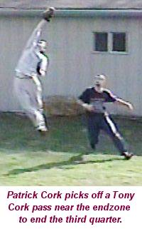
touchdown of the game and a 77-49 advantage for the Grisons. Following Howard's fumble to start the half, the two teams went 8 straight possessions with touchdowns, but that would end on the last drive of the quarter for the Zo'ril. After moving the ball inside the 10-yard line, Tony Cork tried to loft a pass to Brooks Wilson in the corner, but Patrick Cork made a leaping one-handed interception to squash the drive and end the third quarter with the Grisons still leading by four touchdowns at 77-49.The offenses exploded in the third quarter as each team scored 28 points and the quarterbacks were both extremely accurate. Newell finished the quarter 12-for-16 with four touchdown passes and Tony Cork was a near-perfect 13-for-16 with 4 touchdowns, but one costly interception. Greg Howard and Willy Truitt both excelled in the quarter catching 6 passes and scoring three times. "You could really see who was fresh in that quarter," added Patrick. "Willy played QB for most of the first half and Greg's just in great shape. The two of them were running loose the entire second half."
With the Zo'ril in desperate need of a stop to start the fourth quarter, Newell found Chris Cork on a short completion, but Cork spun away from a tackler at midfield and took it all way for a score and the rout appeared to be on as the Grisons lead was 84-49. However, the Zo'ril refused to roll over and would put on a valiant charge in the final period led by a phenomenal quarter by Tony Cork. Cork responded with a 4-for-6 drive capped off by a Wilson touchdown catch to cut the lead to 84-56, however, in what would be the case most of the final period, the drive took a long time as the Zo'ril ran 4 1/2 minutes off the clock en route to the touchdown. "We figured with them being down by 5 touchdowns with a quarter to play, that they'd be in hurry-up mode," remarked Greg Howard. "But they kept huddling up and the clock kept moving. We continued to sit back in our zone and give them underneath routes all day, and made them complete 4 or 5 passes to score. Eventually they ran out of time."
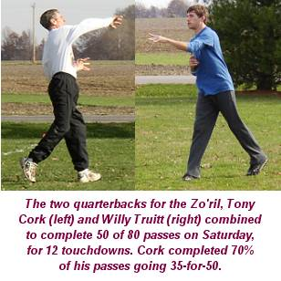
Despite holding a four-touchdown lead, the Grisons went back to their no-huddle offense on the next drive and moved quickly to the 10-yard line of the Zo'ril. However, Newell was unable to find a receiver on four straight passes as the drive stalled and the Zo'ril defense held the Grisons on downs for the first time since the opening drive of the game. The Zo'ril struck immediately as Tony Cork found Brooks Wilson deep down the sidelines for a touchdown to cut the lead to 84-63. The Grisons moved the ball to midfield on the next drive, but two dropped passes by Kevin Ryan proved disastrous, with the second coming on fourth and short, and the Zo'ril saw a glimmer of hope for the first time since the second quarter. Having stopped the Grisons on downs only once the entire game, the Zo'ril had halted back-to-back drives and had the ball at midfield with a chance to cut the lead to 14 points. It didn't take long again as Tony found Williamson over the middle for 15 yards, and just as he was being tackled, Williamson lateraled to Brooks Wilson at the 5 yard line and Wilson walked into the endzone for the score and suddenly the lead was 84-70 with 12 minutes to play."We had to go back to our bread and butter after they cut the lead to 14," added Coach Garrard. "We had to get a score and get the ball in the hands of our best players as much as possible." Newell completed a short pass to Howard on first down and another short pass to Patrick on the second play, but Cork was able to shake a tackle, turn up the sidelines and fight his way into the endzone thanks to a great block by Howard downfield to push the lead up to 91-70. The Zo'ril responded with another touchdown pass to Wilson to move the lead down to 91-77, but Newell answered with a laser throw to Chris on a slant route to move the lead back to 21 points at 98-77. The Zo'ril marched down the field
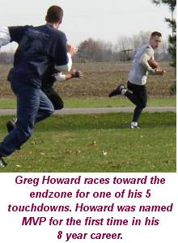
themselves and scored on a Cork to Williamson touchdown pass to cut the lead to 98-84.With just 3 minutes remaining in the game, the Zo'ril desperately needed a stop or a turnover, but the Grisons put together one of their more effective drives of the afternoon as they moved the ball while running some clock on completions to Patrick and Chris, and ended up capping the drive with a short touchdown pass to Chris Cork - his 6th of the day - to put the game outt of reach at 105-84 with just over a minute to play. The Zo'ril would score on the final play of the game - a 2 yard touchdown pass from Tony Cork tto Wilson - his 6th receiving touchdown, and 7th overall in the game for the final score of 105-91.
Tony Cork was brilliant in relief at quarterback for the Zo'ril. After starting just 5-for-11, Cork went an astounding 30-for-39 in the final two quarters to end the game 35-for-50 with 9 touchdown passes and 2 interceptions. Kirby Newell held up as well as could have been expected for the Grisons as he finished 42-for-71 with 15 touchdowns, and most importantly, just one interception. "Ball control is always key to Cork Bowl," replied Newell. "If Coach doesn't throw those two interceptions in the endzone, the game could have been tied. We were able to move the ball and not turn it over most of the game and that was a huge reason why we came out on top."
Greg Howard, playing in his 8th Cork Bowl, took home MVP honors for the first time. "This game proves my point that the Truitt brothers weren't using me correctly," responded Howard. "I would like to thank my supporting cast for helping me win MVP. Everyone on our team contributed in huge ways, especially blocking downfield on a few of my touchdowns. I would love to stay with the Cork organization in the future, and would even be willing to play for the league minimum if they would allow me to come back. I also hope my performance will shut up some of my critics.
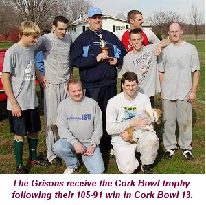
Not all of them, but maybe some." After suffering through a pair of tough performances the past two years, Howard had the best game of his career finishing with a career-high 15 receptions and scoring 5 touchdowns. "Greg did everyting we could have expected him to do," replied Patrick Cork. The Zo'ril continued to shadow Patrick and Chris with double-coverage all game instead of leaving a safety back to help out, and Howard burned them time and time again with big plays. "It's great to see him step up to the challenge and be a go-to receiver when our team needed him," added Patrick. Howard also led all players with 12 tackles on defense. "Some people thought Greg would struggle when they implemented the no-rush rule," added Willy Truitt. "However, he responded with the best game of his career. When he was with our organization, we knew he had the tools to be a great player, and it's nice to see he found somewhere he can use them."Patrick Cork added 10 receptions and 3 touchdowns for the Grisons, and Chris Cork was back to his normal touchdown-scoring self hauling in 9 passes with 6 going for touchdowns giving him 42 touchdowns in his career. Kevin Ryan added 8 receptions and a score for the Grisons. The Grisons were extremely consistent the entire game scoring 21 points in the first quarter and 28 in each of the final three.
The injury to Reggie Truitt put the Zo'ril in a tight spot in the 2nd quarter, but the team responded with a great second half due to a balanced attack on offense. Brooks Wilson led the way for the Zo'ril in his
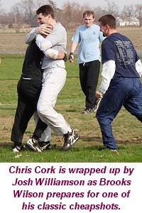
return with 14 receptions and 6 touchdowns. Wilson also added a touchdown off a lateral in the 4th quarter. "It was great to have Wilson back on the field," added Chris Cork. "It was nice to see a lot of blocks in the back, late hits and kicking the ball as the center prepared to snap it. Those are the things that have been missing since he's been away." Josh Williamson had a great day as well finishing with a career-high 13 receptions and scoring one touchdown. "Josh was definitely our MVP," added Willy. "He did everything we could have wanted him to do for us offensively and defensively." Despite playing just 2 1/2 quarters at receiver, Willy Truitt finished with 12 receptions and 3 touchdowns. "If the current rules are in place next year and Coach and Kirb play QB, I am interested in seeing what I could do at receiver for a whole game," added Truitt. Despite missing most of the game, Reggie Truitt managed to haul in 6 passes and score twice, and Ryan Tomlinson finished the game with 5 receptions.Defensively, the Zo'ril had a balanced attack with Josh Williamson leading the team with 9 tackles. Reggie Truitt and Ryan Tomlinson each had 5, and Brooks Wilson, Willy Truitt and Jake Hoalt all had 4 tackles. Wilson had a forced fumble and fumble recovery, and Tomlinson intercepted the first pass of his career. For the Grisons, Greg Howard was all over the field on defense finishing with a game-high 12 tackles. Robert Trimble was a pleasant surprise finishing his rookie season with 10 tackles and an interception. "I don't think there is any doubt that Trimble was the defensive player of the game," added Patrick Cork. "He broke up so many passes in that first half and helped us get the lead that we had. His interception was a huge boost
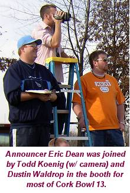
early, and he was a tackling machine out there." Chris Cork finished with 7 tackles, Patrick Cork had 6 tackles and an interception, and Kevin Ryan had 3 tackles and an interception.The no-rush rule seemed to have little impact on the game, and it will be interesting to see what happens between now and next November in the league offices. With players getting older, and more players becoming involved, rumors have begun to circulate that potential 6-player teams may be put together in the future with Tony Cork and Kirby Newell playing quarterback for each. "We have had back-to-back years where a player has left injured," commented Commissioner Patrick Cork. "We have had to scramble to get another player on the field, and that doesn't always leave the teams even. The league is taking some consideration into fielding 6-man rosters which would give each team an extra player to sub in and out of the game throughout the day. In the event someone would become injured, each team would have an extra man. If nobody gets hurt, each team would be afforded the opportunity to rotate players in and out in whatever manner they choose, keeping everyone more fresh and making the level of play higher. It's nowhere close to being implemented, but it's definitely something for us to think about in the future."
A Cork Bowl record 15 fans took in the action for Cork Bowl 13. Those in attendance were: Akeya Harper, Frances Huff, Holly Cork, Jane Newell, Dave, Jen and Olivia Rueth, Dustin Waldrop, Judy Cork, Jodi Machtley, Nancy Garrard, Les, Tanya, Noah and Rylan Wilson as well as announers Eric Dean and Todd Koenig.
Cork Bowl 13 Game Notes:
Chris Cork went over 40 career touchdown receptions in the game as he hauled in 6 TD passes giving him 42 in his career....Greg Howard set the all-time record for most Cork Bowls in which his shirt was torn off when his jersey was shredded in the 3rd quarter....Kirby Newell moved from 8th place to 4th on the all-time passing list moving past Steve "Colonel" Sanders with his 42 completions....Greg Howard's game-high 15 receptions moved him past Reggie Truitt into 4th place on the all-time receptions list with 61....Howard also stands in third place in career touchdowns with 31....Robert Trimble moved from 27th in tackles all the way to 14th with his 10 tackle performance....Willy Truitt jumped from 20th in receptions into a tie for 14th all-time with his 12-catch day....The 7 points allowed in the second quarter by the Grisons tied a record for fewest points allowed in a quarter....
(Click Here for More Pictures!)
Back to
top
Hall of Fame announcer Eric Dean adds
his insight into the game:
"Well let me begin by
saying that I spent the last 2 and a half quarters announcing the
game with 2 complete strangers, but darn knowledgeable about
football! It was different being with others in the booth, but it
was a lot of fun. As for the game, it wasn't the most exciting Cork
Bowl ever (although it was far better than my previous 2), but there
was some good action, exciting plays, and a good time had by
all. Congratulations to Greg Howard!
I thought he would suffer the most from the non-rush rule, but it
really let him shine in other ways. He wasn't forced to stay in and
block, and this showed us all of his skills at receiver. He also led
the game in tackles and was just everywhere on defense. He is
obviously the most athletic person in this year's Cork Bowl, and
this year was the best football player out there (Greg, could it be
the shoes?) Although I don't think I ever
said it during the game, I was very impressed with the way that
Kirby Newell played. I honestly thought HE SHOULD NOT BE PLAYING,
but he proved to everyone that he was up to the challenge. My
biggest worry was that he would injure himself making a tackle on an
interception, he solved that by only throwing one pick all day.
Robert Trimble played extremely well for the Grisons as well. I
meant it when I said it looks like he has grown a foot since last
year! He made a lot of plays on defense and was a big part of the
game in the first half, when it was decided. Patrick and Chris were
their normal solid selves. Chris is great in the clutch, and Patrick
made by far the best catch of the day. I didn't mention it on air,
but I loved the celebration on that one too! Kevin Ryan flat out
plays hard, he had a "surprise" pick, but made other plays during
the game. I think he bounced back well after what he called a
disappointing performance last year. As for the Zo'ril, losing
Reggie really seemed to hurt. Willy wasn't on early, but Reggie is a
constant threat, a great defender, and the defending MVP. He was
really out of the game a few minutes into it. He toughed it out and
made 6 catches, but he was not at 100 percent. Willy did a nice job
as receiver. Racking up some big catches and doing a great job on
the slant pattern. Coach played well in the role that he was made
for. Sit back, count to 5, then throw the ball. The guy was itching
to get in the entire first quarter. Sure he didn't want to see
Reggie get hurt, but he was stretching before I even knew what was
going on! He threw the ball well, took what was given to him and had
a solid second half. Williamson played the best I have ever seen him
play. A lot of catches, several tackles, and along with Holly- what
a great medical staff! Jake made some good tackles and I think he
was excited about playing as well. Tomlinson had a pick, made some
catches, and always played hard. Brooks Wilson really played well.
He seemed to be open and around the ball all day long. He found the
endzone more than anyone else, and has to be happy with the way he
played. Finally, Coach Garrard! The guy
was calm all day! You would never have known that this was a huge
game for him to be coaching in. He even gave up the headset a couple
of times. So where does Cork Bowl go from
here? I think the game is heading in a different direction. I like
the idea of more 2 way players. This gets more guys on the field,
and it helps out some of the more "out of shape guys". Robert,
Coach, Jake, and Kirb were all fresh in the fourth quarter. We could
not say that about everyone. As always I enjoyed this year's Cork
Bowl and look forward to CB XIV. Thanks guys! --Eric Dean
Grions Quarterback Kirby
Newell Adds his Postgame Thoughts:
Hello men, I'd just like to say that I MUST be in the best shape
of my life because I'm not very sore at all. Just a sore shoulder. I
hope that you are all doing as well as I am!
I'd just like to say a few things about this year's game. It was
great!! Great to be on the field, great to be with the guys. Keep
the tradition alive. I'd like to say that I think Robert Trimble has
a future in this business. He was awesome on defense, especially for
a rookie. I don't think he missed a tackle. His coverage skills were
awesome. He made the play of the game on his early interception. It
kept the Zorils from getting an early lead. It also took Reggie
Truitt out of the game. I'd like to give Robert a special Kirby
Newell award for taking out both Truitts!! I hope that Reggie is
doing okay and WIlly too. However, you've got to wonder if the
Truitts are weak or something. Just kidding guys, I hope that you
are doing well.
Secondly, I'd also like to say that if we all keep aging at the
current speedy rate, I think the score will be 14-7 in another 2 or
3 years. We all (except Greg and Robert) looked old. But, still a
great game. I felt that Brooks had a very solid game. I thought that
Williamson had a good game as well. However, how do you have 13
receptions and only 1 touchdown?? I'd like to congratulate Chris
Cork for having 9 catches and never running on a pattern after the
2nd quarter. I'd also like to give Coach Cork some props for his
performance. However, Coach had 2 interceptions, one to Kevin and
one to Patrick.
Finally, Greg Howard. Congrats on your MVP. I can't help but
think how great of QB you must have had to get YOU the MVP award.
YOu played awesome on both sides and I'm proud of you. Like I said,
"Greg Howard for President in 2036!!" I felt I played decently. I,
of course expect perfection from myself. BUt, if you take away my
first 3 series and the drops that our team had I think I might have
had a perfect QB rating. By my calculation, I had a 156.3 rating, a
bit off of the 158 perfect rating. Maybe next year. Oh yeah, Kevin
Ryan, could you give me a shout out whenever you're open.
Oh yeah, I almost forgot - Tomlinson, next year maybe you could
just bring Todd for color commentary and you could just, well, not
play on my team. Just kidding, keep trying and keep it real.
--Kirby